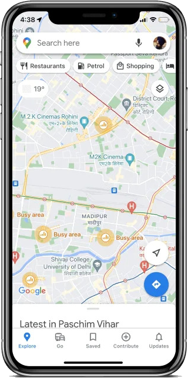
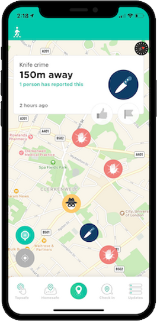

COSC2196: Assignment 3

The Team
Team Name
The Light Bringers
Personal Information
Tessa Riley (s3977229)
I am a 28 year old woman from the Central Coast of NSW. My mother is Danish and I have spent some time in Sweden, so I can speak a basic Scandinavian language. I love to travel and learn about different cultures and people. I have been many places but my favorite is Japan and Norway. Japan for the culture and Norway for the nature. I have a German Shepard named Muumi who I love to death.
I’ve studied many different things including law, teaching, visual arts and I even managed to complete a diploma of Graphic Design. I like to study but seem to have a problem with losing interest after a while. However there is something about coding that I find addictive. And I have never studied from the comfort of my own home – so I am keen to continue this course. I am excited to be part of The Light Bringers as I truly believe in the app we’re creating.
In 2017 I was diagnosed with schizophrenia and have been working closely on healing and looking after myself. Ironically, I work in disability helping those who are most vulnerable. I did well in high school and the HSC, meaning I found it easy to study and pay attention. Since being diagnosed, I have had a hard time staying focused and leaving the house. However, I have found a job I can work from home with, and I have found this course. Both can be done from home and I find myself loving my situation. It would be easy to be doom and gloom about it, but with the right treatment and ways to keep busy, I can lead a normal happy life.
Stanley Kapoor (S3971041)

I was born in Fiji but with an Indian background so am I Fijian Indian, one of my favorite hobbies is to listen to old radio shows, as I am big fan of Audible, audio books the spoken word and audio plays. I discovered that I love radio plays and productions, so captivating as it transports you into the play, becomes "Theatre of the Mind". My true love for technology comes from gaming and modding games. I have been playing PC games as kid and still do. I prefer PC games rather than console-based games. I love modding games and tinkering with the base files to change the aspects of game play. This includes updating stats, moving elements around, and changing the unit’s hierarchy. My favorite PC game types are long form games rather than the fast-paced action based, these are the Football Manger series, Medieval Total War series, X3 and Red Dead Redemption 2.
Clive Payton (S3311370)
I was born in South Africa and moved to New Zealand at age nine before coming to Australia where I completed my last year of high school. I really enjoy philosophy, politics, science, technology, and general thoughtful conversation. My trajectory in technology started with a decommissioned IBM PS2 286 my father brought home from work. This machine had nothing more than DOS, but it challenged me to see what it could do – and really what I could do. Soon after, I started to explore gaming with multiple game consoles including, an Atari 2600, a Sega Master System II, and finally a Sony Playstation. By this stage I was already obsessed with technology, but then we got a PC with a dial up 56kb/s modem with Windows 95 and Netscape Navigator. As a young adult I started doing small web development jobs and building and repairing PC’s. This led to my interest in becoming a web developer, teaching myself HTML, CSS, JavaScript, and PHP. However, I found that this was more about design, repetition, and time than the challenge and impact I was looking for. I am now studying IT to broaden my understanding of the field in the hopes that I will find the perfect niche in an area that is exciting and challenging.
Group Process
The group was very cohesive and worked well together in Assignment 2, but did not manage to finish everything by the deadline. Therefore, to improve, the group will need to make a few required changes:
- Definitively understand tasks required for completion and their required time and skills allocation.
- Assign tasks to individuals who might have a more approximate skill set.
- Set definitive deadlines for each tasks completion. Add priority to more important tasks.
- Make sure to keep track of each tasks progression using a task planner/Todo application.
- Create sub-grouping of team members for colloboration on certain tasks.
Career Plans
Tools
Website URL
https://spookyactioncloseup.github.io/illumimate/
Github Repository URL
https://github.com/spookyactioncloseup/illumimate
Github Audit Trail Review
Your comments on how well the audit trail on the Git repository reflects your group’s work. You will presumably only be able to do this close to the time of submission.
Project
Overview
Topic
IllumiMate is a mobile application for pedestrians that uses one’s location to find the most well-lit, safest, obstruction free, route to a desired destination. The application is targeted towards urban and suburban pedestrians; those who don’t feel safe walking at night. The system will predominantly take advantage of the open -source tools OpenStreetMap and the routing platform GraphHopper. The data that will make this possible will be collated by our team. The data will come from a number of different sources, including popular paths, number of lights on a path/route, specific street light information, construction work notices, up to date hot maps from tracking users. To plug the gaps, we will encourage users to let the team know if they spot infrastructure, like a streetlight or police station, that we haven’t yet included, or perhaps a negative social act such as a crime.
What makes this app really exciting is not only the use of our data to help people, but the collaboration capability of users to help others – paying it forward. Furthermore, if we achieve our goals our data could also be used by official bodies such as councils and or state governments for many different reasons, including but not limited to planning, maintenance, and policing.
Motivation
The motivation for IllumiMate comes from wanting to use readily available technologies and data to help individuals feel safe and mitigate the potential for an array of crimes that are committed on a number of people every day. If we look at just one alarming crime statistic from the Australian Bureau of Statistics (ABS), the number of sexual assaults in 2021 occurring in a non-residential setting, was 10,155. The overall number of sexual assaults increased by 13% from 2020 to 2021 (Australian Bureau of Statistics, 2022). This is easily avoidable with coincidence of a number of IT trends. Firstly, there is significant number of people today have smart phones, statistica.com estimating that around 22.11 out of ~26 million Australians, according to ABS data, having one as of 2022. Secondly, access to data is omnipresent with a host of wireless technologies keeping people connected around the clock, such as open Wi-Fi networks, 4g, and 5g. Thirdly, cloud-based storage and the low costs of storage hardware has allowed more data to be stored and for longer. Finally, crowdsourcing and data harvesting have been used by a number of corporations and start-ups for a number of years.
A future employer would see that this team has built an application/platform with acute consideration of current IT trends. Additionally, it is evident the team has made good use of a wide array tools and technologies, being able to, use, extend, and repackage some of them for this project.
Landscape - Our Competition
Here we collated a table of pros and cons for each of our perceived competitors:
| Pros | Cons | |
|---|---|---|
|
|
|  | Pros | Cons |
|---|---|---|
|
|
|  | Pros | Cons |
|---|---|---|
|
|
It is apparent from these tables that Walksafe will be our closest competitor. We feel IllumiMate will eventually superceed the capabilities of Walksafe with not just crime, but lighting data. Furthermore, IllumiMate will implement a better approach to verification of user submissions, with ascending user rankings giving to proportional weighting to submission validity and coupled with the use ML like TensorFlow.
Detailed Description
Aims
The fundamental aim of IllumiMate is to provide an incredibly intuitive smartphone application which pedestrians can get use to get to wherever they need to be, safely. The application will be geared towards the night and find routes that prioritize safety over other the more simplistic goals of routing applications such as time and or distance. To achieve this IllumiMate will leverage street lighting and crime data. This data will be sourced from official sources such as local councils, state governments, and any other bodies that with records that may be of use. Crowdsourcing is powerful and we will leverage this to make our platform complete and extremely useful to the end user.
To bring safety to the user, the focal point of this app, the Light Bringers are using data from local councils to bring the app to life. The location of lights, and the type of light on a public street is data which is available to everyone. The Light Bringers have consolidated this data into an application, which translates the data into credible advice and reliable and trustworthy routes for the user to follow. By using local data, the pathways provided to the user is done in real time, with real information.
The next goal of the Light Bringers, is to use crime statistics and real time police reports to further the safety of the application’s users. This allows the application to create a route which highlights the safest way to a desired destination. By avoiding areas with high crime statistics (i.e., areas with a high level of assault or sexual assault) the user is statistically more likely to have safe passage. Although the prototype may not include this feature, it is absolutely paramount to include this data when creating this application. Not only does it ensure a level of safety not available on competitors apps, it helps those most vulnerable in society (women, lgbtqia + members and people with disabilities).
To finish, the last goal of the Light Bringers is to create an intuitive app which is easy to use. Including the safest, most lit way home is good, however it’s no use if the application is hard to use, or overly complicated. UX/UI design is important for Illumimate’s success. We use the competitor’s application, Google Maps, on a daily basis. It is easy to use and has set certain features in our mind. Although our apps look and feel similar, Illumimate has safety in mind, therefore is more applicable for pedestrians looking for safety. As long as Illuminate’s user experience is one of ease, the application can help thousand, if not millions of people on their journey.
Plans and Progress
Roles
The following roles were assigned based on the fundamental requirements of the assignment and the skills of the members to maximise output:
-
Lead Developer / Manager – Clive Payton
- Research into the best tools and technologies to build the project and how those tools could be adapted.
- Encoding data, such as light location, into offline maps from OpenStreetMap via JOSM
- Extending a GraphHopper through Java programming to read the custom encoded data.
- Setting a VPS server for hosting the backend applications
- Specifying the data required and the storage thereof for the application to the data-analyst/database engineer.
- Working with the UI/UX designer to determine how the application should be laid out.
- Building the mobile application frontend.
-
Illustrator, UI/UX, Content Designer – Tessa Riley
- Establish the nature of the application and its requirements from lead application developer.
- Review of features, design elements, and interface from prominent contemporary and competitor apps.
- Decision on colour pallet, design language, fonts, and visual assets.
- Overall application UI/UX design and development.
- Wireframing and application flow.
- Asset and content design.
- UI testing.
-
Data Analyst / Database Engineer – Stanley Kapoor
- Work with the lead developer to determine the data-set requirements – the criteria.
- Research and collate data from a range of sources. This will likely include
- Provide limitations if any to lead developer to determine if any plans need to be adapted.
- Provide data visualisation if and where possible.
- Transform data to the necessary format required for utilization by users of the application.
- Decide on the database design and requirements to house the data required by the application
- Implement a database and establish access rules.
Scope and Limits
In the initial plans for the IllumiMate project, we wanted to be able to incorporate a wide swathe of features. The most important to us include streetlight / route lighting data-based routing preference, local crime data-based routing preference, user interactions and collaborative data sourcing, user ranking/badges for good data collaboration, live tracking, and route ratings. However, we have become very aware of the limits on delivering a functional prototype within the period allocated. This includes the nature of the development requirements in terms of time, complexity, the requisite personnel skills, and the lack of publicly available information for lighting data, crime, etc to readily launch a platform that can deliver on any one of these as a promised function. We also have financial limitations in hosting a custom GraphHopper server instance, user database, and in using the GraphHopper API for geocoding client-side route requests.
Therefore, we have to significantly reduced the scope for our prototype for IllumiMate. The scope for our prototype includes the demonstration of mobile application demonstrating the overriding of default routing behaviour of GraphHopper routing service of faster and or shorter routes, for hypothetically tagged illuminated routes which might take significantly more time and or be larger in total travel distance. The meta data that is consumed by GraphHopper will be encoded on a local copy of a small simple suburb in Cairns, Queensland from Open Steet Maps. This will provide a proof of concept to illustrate that with the good data feeds and small tweaks in algorithm weightings we can build out IllumiMate to its full intended scope and more in the not-too-distant future.
Tools and Technologies
* In the following - "No license required for use" either means that the tool is proprietary and free or in the case of open-source we will only be utilizing a tool for its intended purpose without making any modifications.
- Adobe XD (Adobe Creative suite prescription or purchase).
- Map API OpenStreetMap with modeifications. This is open data licensed under the oDbL (Open Data Commons Open Database License). This means attribution is required and all modified works must be released under the oDbL.
- JOSM map editor for OpenStreetMap (no license required for use). We are not modifying this application, so we don’t need to be concerned with its GPL V2 or higher license.
- GraphHopper Directions API, free license with limitations.
- GraphHopper GitHub open-source repository. We will be using and modifying some of the source code. This under the Apache License, which means attribution is required and modified works must be released under the Apache License, with modification notices for all files modified.
- GraphHopper Maps Github open-source repository. We will be using GraphHopper Maps as the backend rendered map routing UI, which will soon include live turn-by-turn navigation. This falls under the same licensing as GraphHopper.
- Java programming and JDK (no license required for use). Clive has had some experience with Java programming.
- VS Code (no license required for use). All three members of the team have had experienced with VS Code
- Running Windows Subsystem for Linux (WSL)(no license required for use). Clive has had a lot of experience with Unix and Bash.
- Android Studio(No license required for use).
- Microsoft PowerBI data visualization (Premium license required). Stanley has had previous experience using this tool and understands it well.
- Excel for editing csv and xlsx (Microsoft Office purchase/subscription required). All of the team have used Excel and understand it well.
- iOS and Android dev tools to access security features (including biometrics), GPS, accelerometer, local data stores etc. Clive has had some limited experience with Android dev tools.
- Access to local road and transport information. This could come from council/municipality and or regional/state government. We would also source streetlight strength and lumen output.
- For the short-term a traditional VPS host with low spec, 1GB ram, 1 core, 20GB storage will suffice. In the case of rapidly growing user-base, high request volume, a loud server hosting like Azure or Amazon AWS will likely be required.
- Flutter cross platform application library and its companion development programming language Dart (No license required for use).
- 2FA API like Authy to confirm users’ identity for allowing route information sharing by users.
- Social media APIs to access extra ‘non-phone’ contacts, including Facebook, Snapchat, etc.
- Web stack technologies (No license required for use for any of the following):
- Frontend: html, CSS, JavaScript. This can include any popular technologies that transpile to these languages including Sass for CSS and Typescript for JavaScript. Clive has very good experience and understanding of frontend web technologies.
- Backend: Node JS. For consistency between frontend and backend development and the consequent simplicity it is beneficial to use Node JS on the backend. Node JS is also very mature and has much better IO throughput than PHP and Python with better asynchronous capability. Clive has had a moderate degree of experience with backend tools and the web request-response paradigm.
- Non-relational, highly scalable, open-source database like Mongo DB (No license required for use). This will allow users to submit varying amounts of information and leave unknown details empty.
- Restful API for transacting data between developers, users, and the server.
- Windows based local development workstation.
- Android phone.
- Apple iPhone.
Testing
The testing of IllumiMate will be necessary at a number of critical development phases before work can progress to the next phase. At the core of IllumiMate is the need to be able to get direction routing based on our custom encoded meta data from OpenStreetMap (OSM). Therefore, in order to test that our core application is working we need to see that when a user searches for a route that it prioritizes lighting rather than time or distance. For test purposes we will be manually encoding ways with the tag (a key value pair encoding in OSM) lit with ‘yes’ or ‘no’ text values. Ways that have no lit tag will default to a value of ‘no’. Because this is a very early test, the tags provided to roads will be entirely arbitrary and not based on actual road lighting.
If the aforementioned round of testing is successful, IllumiMate Map Encoding Reader Algorithm (IMERA), will be implemented. To test this algorithm, we will feed collected lighting data from a given area into JOSM and encode it into an offline OSM file. Using our routing system, we will run a number of test route searches in areas of the map where we know there are lights, which will be visible in the OSM file as a data layer. We will then review the choices the platform makes and check that it has returned the correct route based on encoded way lighting values. This will be done through manual, albeit simple, arithmetic calculation. However, because this will only verify that the app is functioning according to encoded values, we must also ensure that the data is correct. This process will require a number of testers to evaluate a random sample of the difference between various route light weightings. Hence, if a route has multiple alternative routes with lighting, we will need to turn off distance and time considerations for the algorithm and have testers take the most well-lit route, as suggested by IllumiMate, and then others to get a quantitative analysis between them. Testers will be required to traverse these routes with a smart phone light measuring app like Photometer PRO, which records luminous flux (LUX) at set intervals along with GPS coordinates.
Finally, once the core functionality has been tested and is within desirable limits, testing on the UI and overall UX can be undertaken. The testing for this will be achieved through a public beta testing, which will emphasise feedback prompts. The feedback prompts will also include an area for feature suggestions. Public beta testing can be risky in terms of user experience, especially if the product is poorly constructed and or fails to achieve its primary goal(s). This will hopefully be mitigated by a limited feature set, at least initially, and the UI and UX consistency afforded by a modern tooling like the Flutter framework.
Timeframe
Risks
Group Process and Communications
Skills and Jobs
UI/UX Graphic Designer
On our team we have Tessa, who had previous graphic design experience. Although we used her abilities, it would be advantageous to use someone with specific experience with UI/UX Design to optimise our application. We would like to employ someone who can make their mark of design direction, development, and several iterations of the application so we can see what the best outcome could be. They would be involved in day-to-day design of the app, and any websites connected to Illumimate. A vision of safety, protection and good creative problem solving skills must be found within the candidate. A potential employee would have tertiary education in either Visual Communication, IT or UX/UI Design. Strong research skills and the ability to be flexible is a must. Skills they must have include the ability to use the Adobe Suite, Figma and Mural. This means being able to produce prototypes/wireframes and display or share them to with our team.
Project Leader/Co-Ordinator
Our team had Clive and Shashi as the guides who influenced the direction of the work required. This primary done as having on the project from the start and understanding the basis of the application and the intended outcome. However, we have a group type of consensus on the additional tasks to be done, writing developing our own scripts and presentation material. A Project Leader/Co-Ordinator would guide the project by developing the roadmap from start to finish, understanding the progress being made and recording any blockers to the work. This role would also see any critical points that would stop the project from progressing or material changes to the application itself. This role would require the Leader/Co-Ordinator to be a good story writer, as they will be able to understand the project from a whole and communicate this effectively, either via a written or a verbal presentation.
Lead Developer
We have Clive handling all the aspects of developing, coding, building a server, sourcing the right type of map, inputting, and testing. This developer would need to experience in developing map applications and incorporating elements beyond the map i.e., streetlights locations from a data input. We would look at a developer that will handle ingestion of data from API source rather than excel files as the application data will be dynamic. They will need to have a good background in mobile development. One specific area we will look for is the ability for the route that we create is based on a rating system, so the shortest route will not be the best, we will need to incorporate the rating system in to the route calculations.
Data Analyst
We have Shashi, handling our data sourcing, research, validation, and preparation. This role will require two key elements, 1. the source of the streetlights data and 2. research industry material, in this case lamp type and the physics behind this. The data analyst must have the ability to understand the data sources from the different local government areas are not uniform and not in the same context. Some data will have different columns and be presented differently (i.e., latitude and longitude in the same column). They must have the ability to work with the developer in a creating a data store which ingests all different structures of data and present a uniform table for use in the application. The ability to research lamp types, lumen strength and understand the context of creating a rating system to assist the develop in route calculations.
Group Reflection
Group Reflections
Tessa Riley
Coming into the new group I was a bit confused – I had so much to learn and pick up to start contributing well for the group. However, the 3 established members did wonderfully in supporting me. Any question could be asked and a detailed answer was always provided. We mainly used teams messenger to communicate to each other. We unfortunately saw Michaela disappear without a word causing some team stress. It left us with only 3 members to complete the assignment. We divided the work up through our meetings (which were regular and sometimes casually not recorded) and some through the to-do list on teams. Working in teams is very hard for me. I tend to knock over assignments as soon as I get them. This is hard in a team setting where the pace is different. I would’ve liked to have seen the group knock over the writing earlier, but I was surprised in the amount of effort my teammates were making on the programming and making of the application front. I am completely new to IT, whereas my team members used their prior skills in a fast, productive rate. This is the best experience I have had working in a team.
Stanley Kapoor
Our group learnt from our last project, and we started on a good footing with understanding and defining our task, the group at this stage compromised of Clive, Michaela, and myself. We had commenced planning the tasks and how the project should move forward, we had Tessa join us which lifted our group morale. However, Michaela abruptly left the group, we were back to 3, Michaela, Clive and myself. We re-organised our work allocations into 3 main elements, Content/Art/Media, Data/Research and Application Development/Programming. I felt that we made good consistent progress as shown in the chat messages as we were combining our key understandings together and work began. The meetings we had were of a great nature and we stuck to the agenda and focussed on the overall Project. I was a bit unsure how we would progress as the project had moved to higher level of expectation, beyond Assignment 1 and our group had to work out the best investment of time we had, with the skills/experience we each bought. I felt we were all committed to the Project and the overall subject. I felt our team gelled very well and got along well, as we had no internal disputes.
Clive Payton
At the start of assignment 3 the group was confident and working well together. We knew our project idea from assignment 2 was worth developing, however, to deliver a project of high quality we realized we needed more assistance. Thus, we reached out to the discussion boards for additional members and were extremely lucky to acquire Tessa Riley. However, shortly after bringing Tessa up to speed, Michaela left the group without notice. To counteract this, we realized that we needed to double down on communication, re-defining our roles, re-distributing tasks appropriately, and establishing clear deadlines – all of which I believe were the winning characteristics of our group. The interactions we had during meetings and on Teams messaging were extremely positive and productive. Each member lending their skills knowledge to help other members. I cannot perceive of anything that the group could have improved on with the only limitations arising from a lack of members, at least in terms of the scope of the project. I was incredibly surprised as to how much the replacement of one group member could help to, lighten the workload, stress, and improve the overall direction of the team. I have learnt that despite one’s desire to work alone, working in a team really helps with project work to bring fresh perspectives, improve the content quality, and expedite output.
Collective Group Reflection
The group overall was in good spirits after the last assignment. We went on the hunt for new team members to help us after our last assignment, seeing as we struggled a bit with only three members. Tessa reached out and joined out and joined our team. We were lucky as she has a design background and helped with designing our logo and group presentation. Clive was ready to start making the application with his prior knowledge, eager to jump into it. However the application couldn’t be made without the data sets from Stanley. The group seemed to have all the roles it needed to begin this journey.
One of the key aspects of the group that we found hearting was the atmosphere, the mood and discussions were always professional, dedicated yet fun. We bounded very quickly as the situation called for urgent, clear direct action on tasks. Our meetings well structed and we stuck to our tasks and able to be flexible during the meetings. Listening to each other viewpoint was critical, and learning from each other not just for this project but also in terms of personal growth, this was important we were focussed on our own task, it was good to hear how other team members were going.
As a whole, our group worked together very well. However, we only had three team members and we were spread out quite thinly among tasks. This unfortunately meant a lot of the writing had to be done in the final days, and doesn’t reflect how well our group created together. Clive and Shashi were focused on the actual development of the application of IlluiMate and Tessa on the design and the other assignment. This meant writing was not forgotten, but low on the priority list. But as a group, we delegated tasks and worked through communicating concisely and clearly with one another. We learnt how to share the workload and how to help each other when it all became too much.
Determinately, our group finished the assignment, a little stressed, but as a proud group of budding creators. We surprised ourselves with our determination to get this assignment done, and our ability to work against the odds. We were nearly always in good spirits with one another and created a bond between us that has it’s source in creativity. We are proud of our assignments, and we genuinely put in our best efforts.